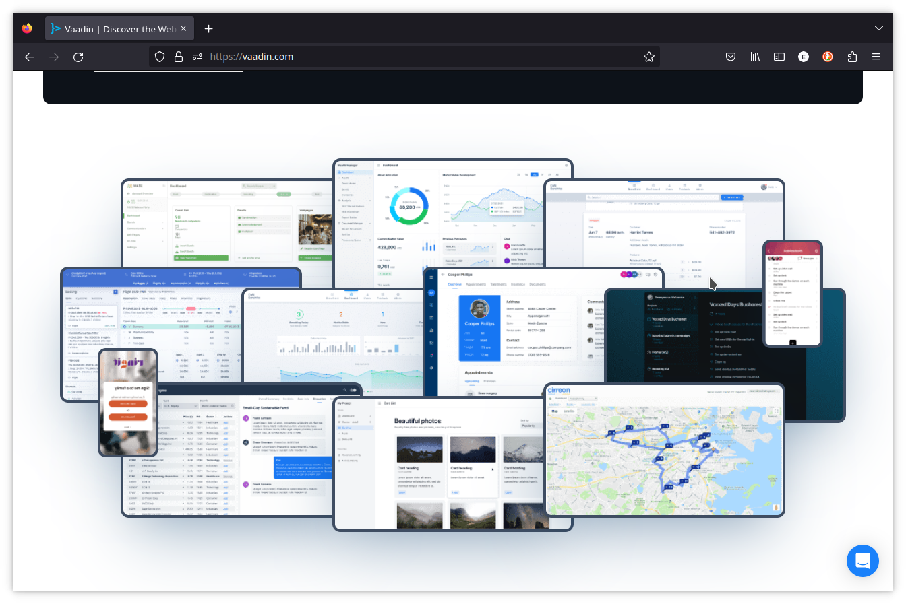
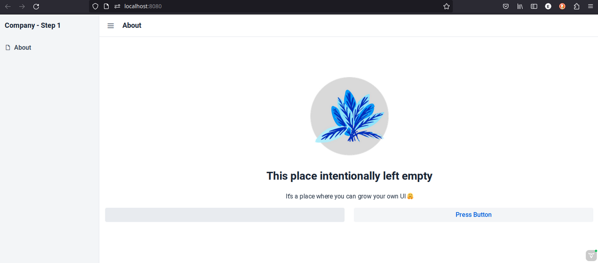
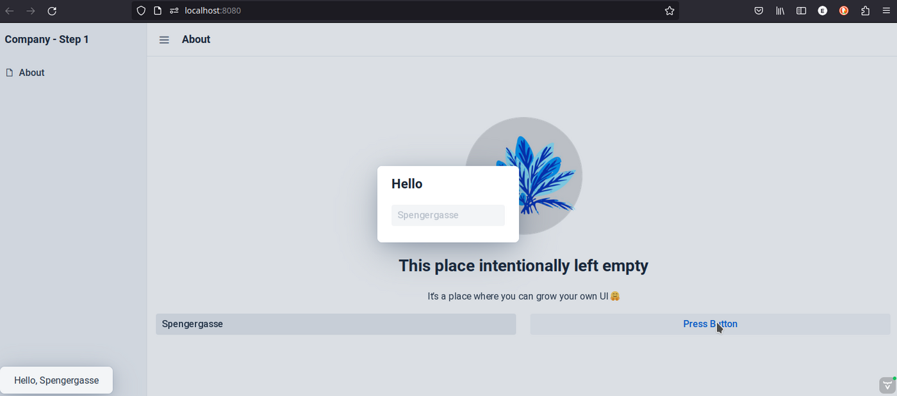

Lektion 4.2 — Teil 4: Webanwendungen mit Vaadin
Vaadin Flow & Start-Paket
Lernziele
- Vaadin Flow einordnen: Webanwendungen ohne eigenes HTML und JavaScriptAbschnitt 1
- die Vaadin-Dokumentation und das Start-Paket nutzenAbschnitt 2
- Aufbau eines Vaadin-Projekts kennen:
pom.xml,Application,MainLayout, ViewsAbschnitt 2 - eine View mit
@Routeund@PageTitleanlegen und ins Menü einhängenAbschnitt 4 - Komponenten erzeugen, in Layouts einfügen und Klicks mit Lambda-Ausdrücken behandelnAbschnitt 4
- die Anwendung starten und im Browser unter
localhost:8080testenAbschnitt 5
1 — Vaadin Flow
„Vaadin is a web app development platform for Java. It helps you build reliable web apps with great UX faster than before.“
„Vaadin Flow is a unique full-stack framework that lets you build web apps without writing HTML or JavaScript.“ – vaadin.com

Auf der Webseite gibt es unter vaadin.com/docs/latest/tutorial ein Tutorial sowie Anleitungen zu Komponenten, Styling, Routing, Datenanbindung, Security, Testen usw. Dort ist auch die komplette API-Dokumentation (Javadoc) verlinkt. Ein kleines Dropdown-Menü links oben schaltet zwischen den Versionen um.
Die Beispiele dieses Kurses verwenden Vaadin 24.9 mit Spring Boot 3.5. Ältere Anleitungen im Netz zeigen manchmal frühere Versionen; die Konzepte sind gleich, einzelne Methodennamen können sich unterscheiden.
Vaadin ermöglicht Webanwendungen ohne HTML, JavaScript und die zugehörigen Frameworks. Das reduziert die Komplexität erheblich: Man muss nur eine Programmiersprache mit ihren Werkzeugen und Bibliotheken beherrschen. Aus den Java-Klassen des Projekts werden schließlich die HTML- und JavaScript-Komponenten erzeugt. Diese Vorgehensweise hat auch Nachteile, z. B. geringere Flexibilität und die Beschränkung auf die vom Framework vorgegebenen Funktionen.
Vaadin baut auf dem Spring-Framework auf. Spring unterstützt die Entwicklung von Backends: Inversion of Control (Dependency Injection), REST-Schnittstellen, Datenbankanbindung (JPA), Security u. v. m.
2 — Das Start-Paket
Auf start.vaadin.com lässt sich ein Startpaket für ein Vaadin-Projekt zusammenstellen: Menüeinträge und vorformatierte Seiten hinzufügen, herunterladen, in IntelliJ öffnen. Für die Beispiele dieses Kurses gibt es ein „leichtgewichtiges“ Paket als Ausgangspunkt (siehe Projektschritt), das auch schon die Model-Klassen der Mitarbeiterverwaltung enthält.
company-web/
├── pom.xml Spring Boot + Vaadin
└── src/main/
├── java/at/spengergasse/company/
│ ├── Application.java Startpunkt (main)
│ ├── model/ Company, Employee, CompanyException
│ └── views/
│ ├── MainLayout.java Rahmen mit Menü
│ └── about/AboutView.java erste View
└── resources/application.properties Port, Browser automatisch öffnenDie Datei Application.java ist der Startpunkt der Anwendung. So sieht sie in einem Start-Paket von start.vaadin.com aus (mit Theme und zusätzlichen npm-Paketen):
@SpringBootApplication
@Theme(value = "company010")
@NpmPackage(value = "line-awesome", version = "1.3.0")
@NpmPackage(value = "@vaadin-component-factory/vcf-nav", version = "1.0.6")
public class Application implements AppShellConfigurator {
public static void main(String[] args) {
SpringApplication.run(Application.class, args);
}
}
@SpringBootApplication macht die Klasse zur Spring-Boot-Anwendung: SpringApplication.run
startet einen eingebauten Webserver und sucht automatisch alle Views. @Theme verweist auf ein eigenes
Stylesheet-Verzeichnis unter frontend/themes/; ohne diese Annotation verwendet Vaadin das
Standard-Theme Lumo.
3 — MainLayout: der Rahmen aller Seiten
Die weiteren wichtigen Dateien sind die Views MainLayout.java und AboutView.java. Das MainLayout entspricht der mit dem Start-Paket erstellten Variante:
MainLayout.java Code anzeigen (61 Zeilen)
public class MainLayout extends AppLayout {
private H2 viewTitle;
public MainLayout() {
setPrimarySection(Section.DRAWER);
addDrawerContent();
addHeaderContent();
}
private void addHeaderContent() {
DrawerToggle toggle = new DrawerToggle();
toggle.setAriaLabel("Menu toggle");
viewTitle = new H2();
viewTitle.addClassNames(LumoUtility.FontSize.LARGE, LumoUtility.Margin.NONE);
addToNavbar(true, toggle, viewTitle);
}
private void addDrawerContent() {
H1 appName = new H1("Company - Step 1");
appName.addClassNames(LumoUtility.FontSize.LARGE, LumoUtility.Margin.NONE);
Header header = new Header(appName);
Scroller scroller = new Scroller(createNavigation());
addToDrawer(header, scroller, createFooter());
}
private Component createNavigation() {
VerticalLayout nav = new VerticalLayout();
nav.setSpacing(false);
nav.add(createNavItem("About", AboutView.class, VaadinIcon.FILE));
return nav;
}
private RouterLink createNavItem(String label, Class<? extends Component> view, VaadinIcon icon) {
RouterLink link = new RouterLink(view);
link.addClassName("nav-item");
link.setHighlightCondition(HighlightConditions.locationPrefix());
link.add(new Icon(icon), new Text(" " + label));
return link;
}
private Footer createFooter() {
Footer layout = new Footer();
return layout;
}
@Override
protected void afterNavigation() {
super.afterNavigation();
viewTitle.setText(getCurrentPageTitle());
}
private String getCurrentPageTitle() {
PageTitle title = getContent().getClass().getAnnotation(PageTitle.class);
return title == null ? "" : title.value();
}
}MainLayout extends AppLayout: Vererbung!AppLayoutbringt den Seitenrahmen mit einem Menü links (Drawer) und einer Titelleiste oben (Navbar) mit.createNavItemerzeugt für eine View einenRouterLinkmit Icon und Text.Class<? extends Component>heißt: ein Klassenobjekt einer beliebigen Unterklasse vonComponent, z. B.AboutView.class.afterNavigation()wird nach jedem Seitenwechsel aufgerufen und setzt die Überschrift aus der Annotation@PageTitleder aktuellen View.
4 — Die erste View
Auch AboutView.java entspricht weitgehend der generierten Version, ergänzt um ein Textfeld, einen Button, eine Benachrichtigung und einen Dialog:
@PageTitle("About")
@Route(value = "about", layout = MainLayout.class)
@RouteAlias(value = "", layout = MainLayout.class)
public class AboutView extends VerticalLayout {
public AboutView() {
setSpacing(false);
Image img = new Image("images/empty-plant.png", "placeholder plant");
img.setWidth("200px");
add(img);
add(new H2("This place intentionally left empty"));
add(new Paragraph("It’s a place where you can grow your own UI 🤗"));
setSizeFull();
setJustifyContentMode(JustifyContentMode.CENTER);
setDefaultHorizontalComponentAlignment(Alignment.CENTER);
getStyle().set("text-align", "center");
TextField tf1 = new TextField(); // (1)
Button b1 = new Button("Press Button"); // (2)
b1.addClickListener(e -> showInfo(tf1.getValue())); // (3)
FormLayout formLayout = new FormLayout();
formLayout.add(tf1, b1); // (4)
add(formLayout); // (5)
}
private void showInfo(String text) { // (6)
Notification.show("Hello, " + text); // (7)
Dialog dialog = new Dialog(); // (8)
dialog.setHeaderTitle("Hello");
TextField tf = new TextField();
tf.setValue(text);
tf.setEnabled(false);
dialog.add(tf);
dialog.open(); // (9)
}
}- Ein Eingabefeld (Textfeld) wird erzeugt.
- Ein Button wird erzeugt.
- Event-Behandlung mit einem Lambda-Ausdruck (Lektion 3.5): Beim Klick wird
showInfomit dem Inhalt des Textfelds aufgerufen. - Textfeld und Button werden zum Layout hinzugefügt.
- Das Layout wird zur Seite hinzugefügt.
- Methode zur Behandlung des Ereignisses (Klick auf den Button).
- Anzeige einer Benachrichtigung (Notification).
- Ein Dialogfenster wird erzeugt.
- Der Dialog wird angezeigt.
@Route(value = "about", layout = MainLayout.class) macht die Klasse unter
http://localhost:8080/about erreichbar und bettet sie in das MainLayout ein.
@RouteAlias(value = "") macht sie zusätzlich zur Startseite. Die View ist ein
VerticalLayout (Vererbung) – mit add(…) kommen Komponenten untereinander auf die Seite.
5 — Starten
Beim Starten (Application.main in IntelliJ oder mvn spring-boot:run) sieht man in der Konsole
zunächst das Hochfahren des Spring-Frameworks; nach kurzer Zeit öffnet sich ein Browser mit localhost:8080
und der AboutView.

Beim Klick auf „Press Button“ wird der Inhalt des Textfelds in einer Benachrichtigung links unten angezeigt und zusätzlich in einem Dialogfenster.

Beim ersten Start lädt Maven alle Abhängigkeiten herunter, und Vaadin richtet sein Frontend-Tooling (Node.js, npm, Vite) ein – das kann einige Minuten dauern und braucht Internet. Danach geht es schnell; mit den DevTools startet die Anwendung bei Code-Änderungen automatisch neu.
Projektschritt
Das Vaadin-Projekt company-web
Das neue Projekt company-web enthält die Model-Klassen aus Lektion 3.8 im Package model, eine schlanke Application (ohne eigenes Theme), das MainLayout und die AboutView mit Textfeld, Button, Notification und Dialog. Öffne die pom.xml in IntelliJ, starte Application und teste die Seite.
company-web/pom.xml Code anzeigen (101 Zeilen)
<?xml version="1.0" encoding="UTF-8"?>
<project xmlns="http://maven.apache.org/POM/4.0.0" xmlns:xsi="http://www.w3.org/2001/XMLSchema-instance"
xsi:schemaLocation="http://maven.apache.org/POM/4.0.0 https://maven.apache.org/xsd/maven-4.0.0.xsd">
<modelVersion>4.0.0</modelVersion>
<!-- Spring Boot: startet u. a. den eingebauten Webserver -->
<parent>
<groupId>org.springframework.boot</groupId>
<artifactId>spring-boot-starter-parent</artifactId>
<version>3.5.7</version>
<relativePath/>
</parent>
<groupId>at.spengergasse</groupId>
<artifactId>company-web</artifactId>
<version>0.0.1-SNAPSHOT</version>
<name>company-web</name>
<properties>
<java.version>21</java.version>
<vaadin.version>24.9.5</vaadin.version>
</properties>
<dependencies>
<dependency>
<groupId>com.vaadin</groupId>
<artifactId>vaadin-spring-boot-starter</artifactId>
</dependency>
<!-- startet die Anwendung bei Code-Änderungen automatisch neu -->
<dependency>
<groupId>org.springframework.boot</groupId>
<artifactId>spring-boot-devtools</artifactId>
<scope>runtime</scope>
<optional>true</optional>
</dependency>
<dependency>
<groupId>org.springframework.boot</groupId>
<artifactId>spring-boot-starter-test</artifactId>
<scope>test</scope>
</dependency>
</dependencies>
<dependencyManagement>
<dependencies>
<dependency>
<groupId>com.vaadin</groupId>
<artifactId>vaadin-bom</artifactId>
<version>${vaadin.version}</version>
<type>pom</type>
<scope>import</scope>
</dependency>
</dependencies>
</dependencyManagement>
<build>
<plugins>
<plugin>
<groupId>org.springframework.boot</groupId>
<artifactId>spring-boot-maven-plugin</artifactId>
</plugin>
</plugins>
</build>
<profiles>
<!-- mvn package -Pproduction: fertig gebautes Frontend für den Server -->
<profile>
<id>production</id>
<dependencies>
<dependency>
<groupId>com.vaadin</groupId>
<artifactId>vaadin-core</artifactId>
<exclusions>
<exclusion>
<groupId>com.vaadin</groupId>
<artifactId>vaadin-dev</artifactId>
</exclusion>
</exclusions>
</dependency>
</dependencies>
<build>
<plugins>
<plugin>
<groupId>com.vaadin</groupId>
<artifactId>vaadin-maven-plugin</artifactId>
<version>${vaadin.version}</version>
<executions>
<execution>
<id>frontend</id>
<phase>compile</phase>
<goals>
<goal>prepare-frontend</goal>
<goal>build-frontend</goal>
</goals>
</execution>
</executions>
</plugin>
</plugins>
</build>
</profile>
</profiles>
</project>package at.spengergasse.company;
import com.vaadin.flow.component.page.AppShellConfigurator;
import org.springframework.boot.SpringApplication;
import org.springframework.boot.autoconfigure.SpringBootApplication;
/**
* Startpunkt der Webanwendung: startet Spring Boot (mit eingebautem
* Webserver) – danach ist die Anwendung unter http://localhost:8080 erreichbar.
*/
@SpringBootApplication
public class Application implements AppShellConfigurator {
public static void main(String[] args) {
SpringApplication.run(Application.class, args);
}
}server.port=${PORT:8080}
spring.application.name=company-web
# öffnet beim Start automatisch den Browser (nur im Entwicklungsmodus)
vaadin.launch-browser=true📁 Stand nach dieser Lektion: beispiele/4.2/
Häufige Fehler
Unter /about erscheint Could not navigate to 'about'.
Die Klasse braucht @Route("about") und muss im Package der Application oder darunter liegen (Spring sucht nur dort). Nach dem Hinzufügen einer Route die Anwendung neu starten.
Web server failed to start. Port 8080 was already in use.
Eine frühere Instanz läuft noch – in IntelliJ stoppen (rotes Quadrat). Alternativ in application.properties server.port=8081 setzen.
Ein Button wurde erzeugt und hat einen Listener, ist aber nicht zu sehen.
Komponenten müssen mit add(…) zur View oder zu einem Layout hinzugefügt werden, und dieses Layout wiederum zur View.
Wissenskontrolle
Frage 1 Wozu dient die Annotation @Route("kunden") an einer View-Klasse?
@Route und ordnet sie den angegebenen Pfaden zu. @PageTitle legt den Titel im Browser-Tab fest.Frage 2 Welche Aufgabe hat das MainLayout?
MainLayout als Layout angeben, werden in dessen Inhaltsbereich angezeigt. So sieht jede Seite gleich aus und das Menü muss nur einmal gebaut werden.Frage 3 Wie reagiert ein Button in Vaadin auf einen Klick?
Frage 4 Wie startet man eine Vaadin-Anwendung auf Basis von Spring Boot lokal, und wo sieht man sie?